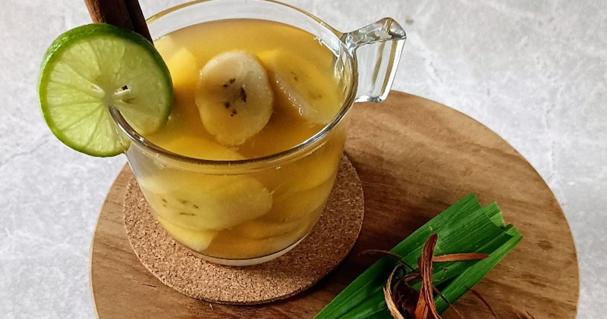

Pelepas Dahaga & Penghangat Hati
Minuman Khas Jogja
Seni meracik rempah yang diwariskan dari keraton turun ke jalanan angkringan. Temukan kesegaran di siang yang terik atau kehangatan di tengah sejuknya malam Yogyakarta.

Kopi Jos
Bukan sembarang kopi! Kopi hitam pekat ini disajikan dengan sensasi unik, yaitu arang membara (jos) yang dicelupkan langsung ke dalam gelasnya untuk menetralisir ampas.
Paling asik diminum sambil nongkrong di angkringan dekat Stasiun Tugu.

Wedang Uwuh
Secara harfiah berarti "minuman sampah" karena isiannya yang tampak berantakan. Padahal, ini adalah racikan rempah super menyehatkan dari jahe, secang, cengkeh, kayu manis, dan pala.
Bikin badan otomatis hangat, pas banget buat malam hari.

Es Semlo
Minuman segar favorit Sultan Hamengkubuwono IX! Perpaduan unik antara potongan pisang kepok dengan kuah sirup rempah merah merona berkat campuran kayu secang.
Penyelamat sejati di siang bolong waktu cuaca lagi terik-teriknya.

Wedang Ronde
Bola-bola ketan kenyal berisi kacang manis yang disajikan dalam kuah jahe panas pekat bersama taburan kacang tanah sangrai dan potongan roti tawar.
Selalu sukses balikin mood sehabis keliling Alun-Alun Kidul.